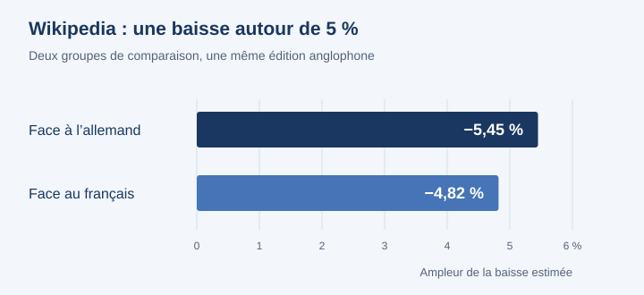

Samedi 12 septembre 2026 La veille du 5 au 11 septembreÉdition pilote n° 001
AI Overviews : quelles visites valent encore le déplacement ?
De l’information à l’expérience : donner une raison de visiter votre site. Illustration générée par IA.
La rechercheComprendre une information
La page utilePouvoir prendre une décision
Le Monde ne constate pas de décrochage soudain de son audience. Une étude sur Wikipedia mesure, elle, une baisse des visites issues des moteurs après l'arrivée des résumés IA de Google. Ces observations invitent à regarder de plus près ce que les visiteurs viennent chercher. Pour vos pages, la question est concrète : qu'ont-ils encore besoin de venir faire chez vous ?
Le dossier
Le chiffre global ne dit pas quelles pages protéger
Le 8 septembre, Louis Dreyfus, directeur général du groupe Le Monde, explique à INfluencia que ses audiences n'ont pas subi de baisse soudaine, une fois la saisonnalité prise en compte. Il rapporte également une progression du trafic de la version anglophone au premier semestre. C'est un témoignage d'éditeur sur ses propres résultats. Il ne permet pas de mesurer l'effet isolé des réponses IA sur chaque article. Lire l'entretien.
Une autre observation, repérée dans notre veille cette semaine, mérite d'être rapprochée de ce constat. Dans un travail de recherche révisé le 2 septembre, Mehrzad Khosravi et Hema Yoganarasimhan comparent les visites issues des moteurs vers des articles Wikipedia en anglais avec celles de leurs équivalents allemands et français. Après l'arrivée par défaut d'AI Overviews aux États-Unis, ils estiment une baisse de 5,45 % face au groupe allemand et de 4,82 % face au groupe français.
Leur méthode cherche à distinguer l'effet du déploiement des évolutions communes aux articles comparés. Elle porte sur des données de décembre 2023 à décembre 2024. Elle agrège les moteurs externes et ne mesure donc pas uniquement Google. Ce travail déposé sur arXiv ne donne ni un taux de perte applicable à votre site, ni un verdict sur tous les contenus français. Consulter le travail de recherche.
Deux sources, deux façons de mesurer
arXiv · travail de recherche
Capture du titre original. Révision du 2 septembre 2026. Consulter la source.
Ce qui est étudié
Les visites issues des moteurs vers Wikipedia en anglais.
La comparaison
Les versions allemande et française des articles.
La limite
Une estimation sur Wikipedia, avec des données de 2023–2024.
INfluencia · entretien
Capture du titre original. Entretien publié le 8 septembre 2026. Consulter la source.
Ce qui est rapporté
L’évolution des audiences du groupe Le Monde.
La méthode
Le constat de son directeur général dans un entretien.
La limite
Une déclaration d’éditeur, pas une mesure isolée de l’effet des réponses IA.
À retenir : ces observations portent sur des mesures différentes. Elles ne se contredisent pas nécessairement.
Wikipedia : une baisse autour de 5 %
Trafic vers l’édition anglophone
Face à l’allemand−5,45 %
Face au français−4,82 %
036 % de baisse

Résultats de Khosravi et Yoganarasimhan, révision du 2 septembre 2026. Données 2023–2024. Ces estimations ne constituent pas une prévision pour votre site. Source et méthode.
Mon analyse. Ces deux observations justifient de segmenter les pages avant de réagir. Un total de visites peut masquer des mouvements opposés. Une page qui répond à une question factuelle et une page qui permet de choisir une prestation ne rendent pas le même service. Je vous conseille de commencer par cette différence dans vos propres données.
Prenons un exemple de travail : un hôtel qui publie une définition de la demi-pension et une page avec ses chambres familiales, leurs disponibilités et ses conditions d'annulation. Pour la seconde, le visiteur a une décision précise à prendre. Cela donne une direction éditoriale à tester : rendre cette décision possible sur la page, avec les informations réellement détenues par l'établissement.
C'est la position que je défendais jeudi dans Algorithme : partir de ce que le prospect veut décider, puis construire la page qui l'aide. Je maintiens cette priorité. Mesurez les demandes reçues par ces pages, conservez les questions qui bloquent la décision et enrichissez les réponses. Vous aurez une base concrète pour arbitrer votre prochain mois de production. Relire l'édition du 10 septembre.
Google détaille la place des comparateurs en Europe
La documentation Google, actualisée le 11 septembre, décrit des blocs destinés aux comparateurs dans l'Espace économique européen, notamment pour les hôtels, les transports et les produits. Les clics mènent vers le comparateur sélectionné. Une autre unité donne de la visibilité aux fournisseurs directs. Pour un hôtelier ou un marchand, je commencerais par examiner la présentation réelle de ses requêtes commerciales : une position seule décrit mal ce que l'internaute voit. Documentation Google.
Ce qu’il faut regarder
Le comparateur sélectionné
Ses hôtels sont développés avec leur carte et leurs prix.
Le lien de sortie
Il conduit vers ce comparateur.
Les autres comparateurs
L’internaute peut en sélectionner un autre dans la liste.
Une API Google Search accessible sous accord partenaire
Google décrit une interface permettant à ses partenaires de récupérer des résultats de recherche dans un format exploitable par leurs applications. La documentation, datée du 9 septembre, exige notamment un identifiant rattaché à un accord partenaire. Si vous préparez un outil de veille ou d'analyse des résultats, vérifiez votre accès avant de bâtir le projet autour de cette possibilité. La page ne fournit ni grille tarifaire ni procédure d'admission détaillée. Présentation officielle.
Google for Developers · prérequis
Extrait authentique de la liste des prérequis, capturé le 12 septembre 2026. La condition porte sur l’accord partenaire. Consulter la source.
Projet Google CloudClé APIAccord partenaire
Tailwind rejoint Shopify : vérifiez surtout vos achats prévus
Le 9 septembre, Adam Wathan annonce que Tailwind Labs rejoint Shopify. Il indique que Tailwind CSS conservera sa licence MIT et que l'équipe poursuivra sa maintenance. Les nouvelles inscriptions aux produits commerciaux Tailwind Plus et ui.sh ferment ; les clients actuels gardent leur accès. Cela concerne les équipes qui construisent leurs pages avec ces outils. Mon conseil : vérifiez vos dépendances commerciales avant une refonte. Cette annonce ne démontre aucun bénéfice de référencement. Annonce de Tailwind.
Tailwind · annonce officielle
Capture du titre de l’annonce d’Adam Wathan, publiée le 9 septembre 2026. Consulter la source.
Une requête décisionnelle exprime un choix à faire. « Hôtel Bordeaux chambre familiale parking » précise plusieurs contraintes que la page doit aider à départager. Le travail éditorial consiste à fournir les éléments de la décision : capacité de la chambre, conditions du parking, disponibilité, prix correspondant au séjour.
Dans ma méthode, cette précision sert à choisir les pages à produire. Elle oblige à partir de l'offre réelle et des questions des prospects. Un grand volume de recherches ne suffit pas à justifier une page.
Attention à la confusion : une requête précise n'est pas une garantie de conversion, ni une protection contre les réponses IA. C'est une hypothèse commerciale que vos demandes de devis ou vos réservations permettront d'évaluer.
À tester sur votre site
Suivez dix pages jusqu'à la demande commerciale
Aujourd’huiChoisir 10 pagesRelever visites et demandes
Une modificationEnrichir 1 pageAjouter une information utile
Dans 4 semainesExaminer les résultatsProlonger si le volume est faible
Choisissez dix pages liées à une offre réelle. Pour chacune, notez la décision qu'elle aide à prendre, les visites issues des moteurs et les demandes qualifiées qu'elle reçoit. Distinguez aussi les visites attribuables aux assistants IA lorsque votre outil de mesure les identifie.
Conservez les valeurs des quatre dernières semaines comme point de départ. Ajoutez sur une seule page une information qui manque pour décider : conditions d'intervention, prix contextualisé ou cas documenté. Notez la date et laissez les autres pages servir de repère.
Revenez dans quatre semaines. Examinez demandes, visites et éventuels changements de saison ou d'offre. Si les volumes sont faibles, prolongez l'observation. Cette comparaison guidera la suite ; elle ne suffira pas à attribuer une hausse à la modification seule.
La sélection à garder
Où Google affiche les conversations
L'analyse de Glen Allsopp et Xibeijia Guan pour Ahrefs, publiée le 27 août, examine les résultats « Discussions et forums ». Elle aide à regarder quels espaces de discussion apparaissent autour de vos sujets. À lire avant de décider où contribuer, en vérifiant ce qui apparaît réellement dans votre pays. Lire l'analyse Ahrefs.
Ce que vous vendez après l'audit
Dans mon édition du 8 septembre, je détaille le passage d'un livrable ponctuel à un système qui entretient le travail SEO. À relire si vos rapports se ressemblent chaque mois. La question à poser à votre prochaine mission : quelle décision votre client pourra-t-il prendre grâce à ce suivi ? Lire l'édition Algorithme.